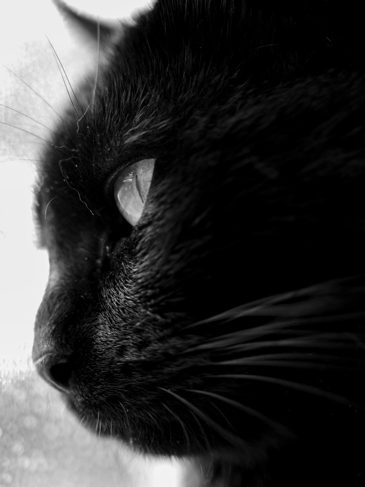
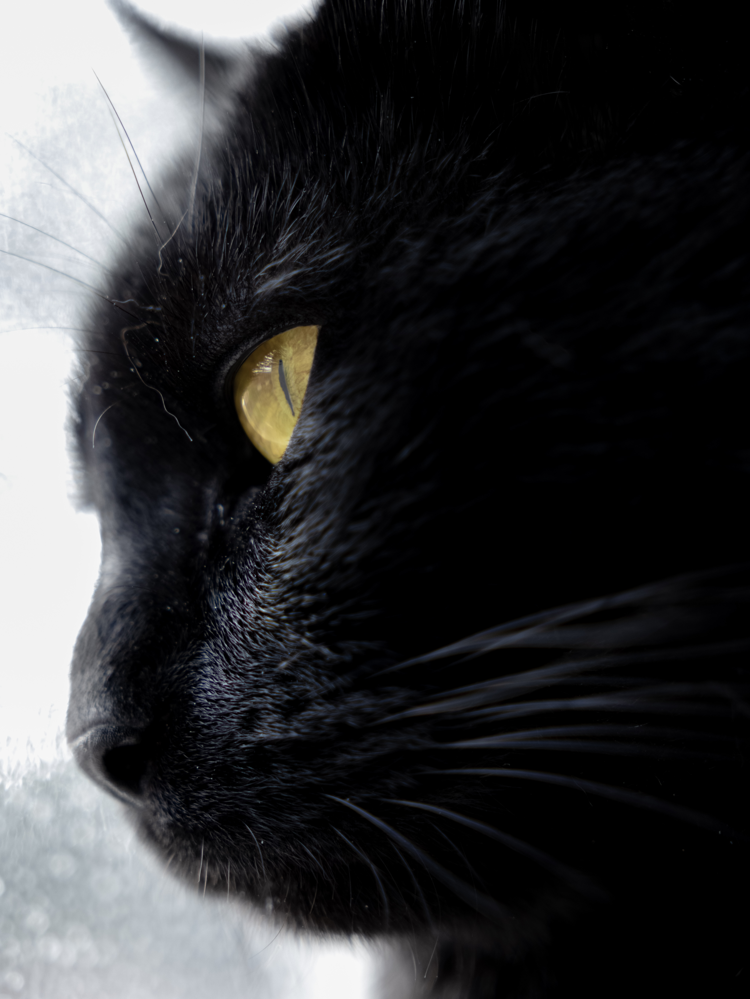
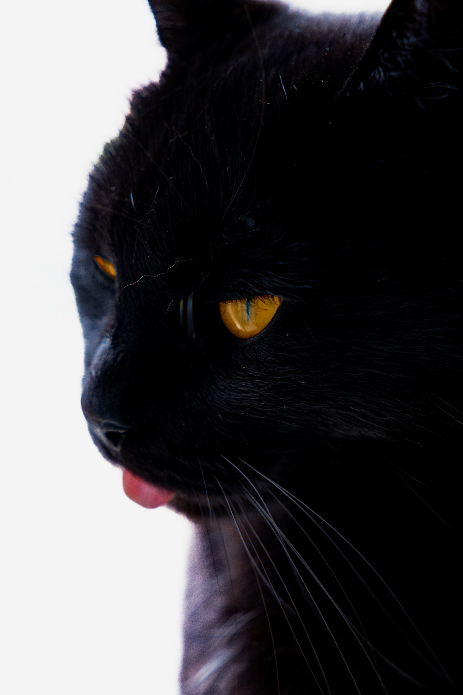
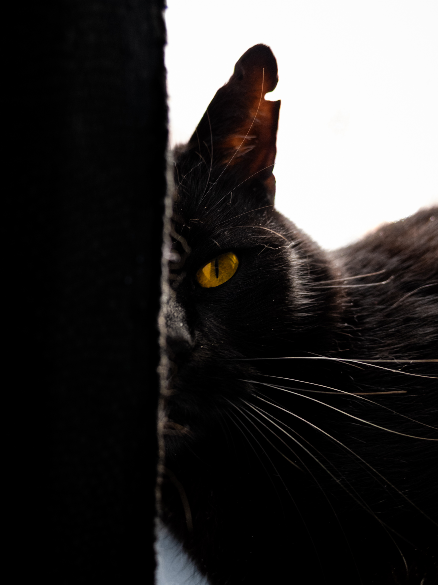
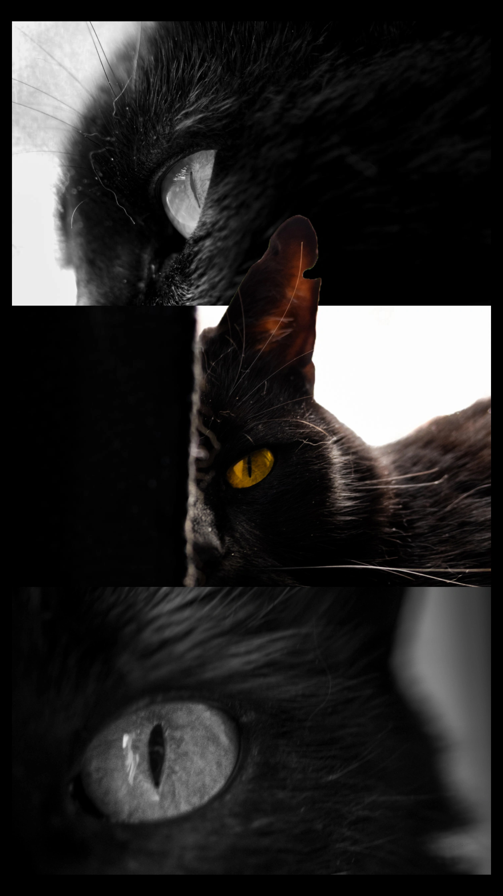
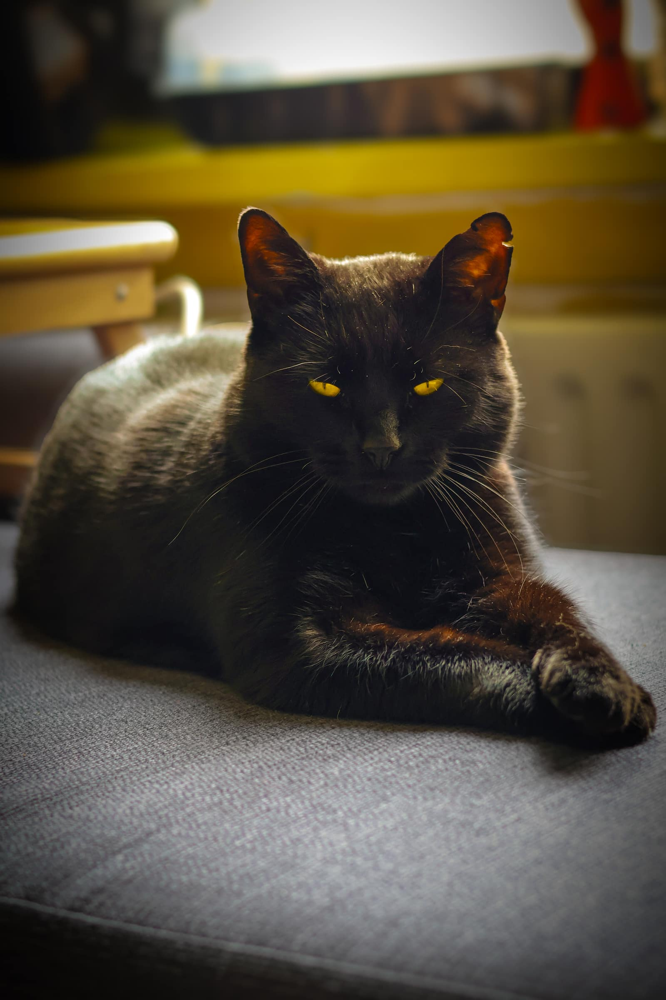
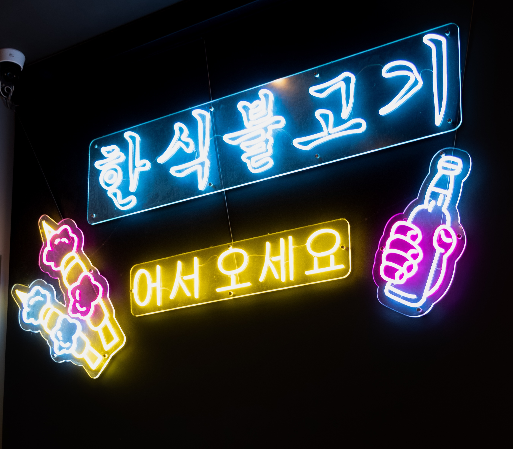
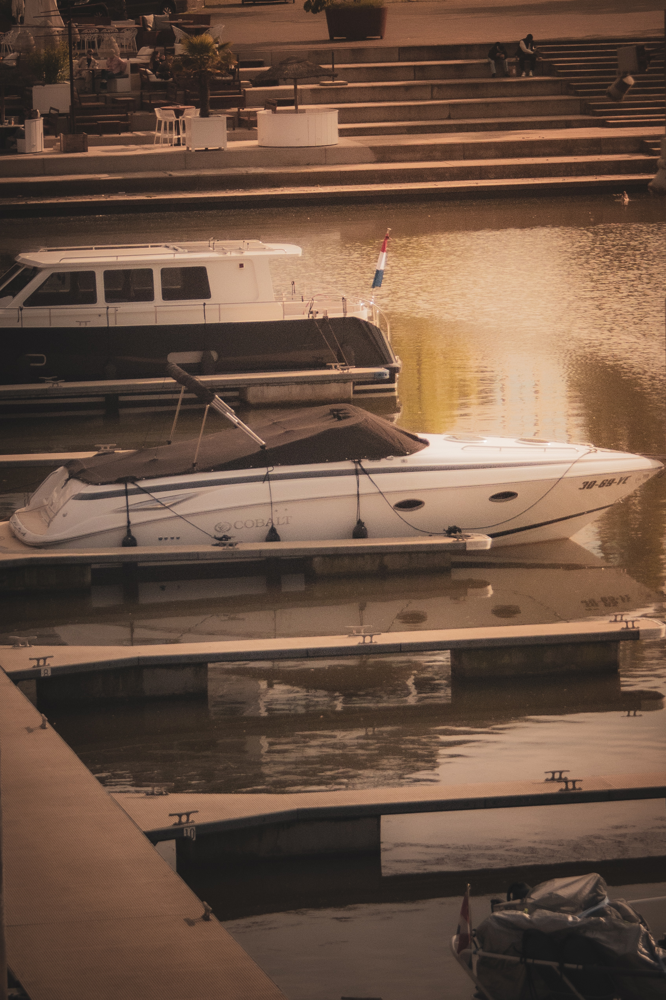
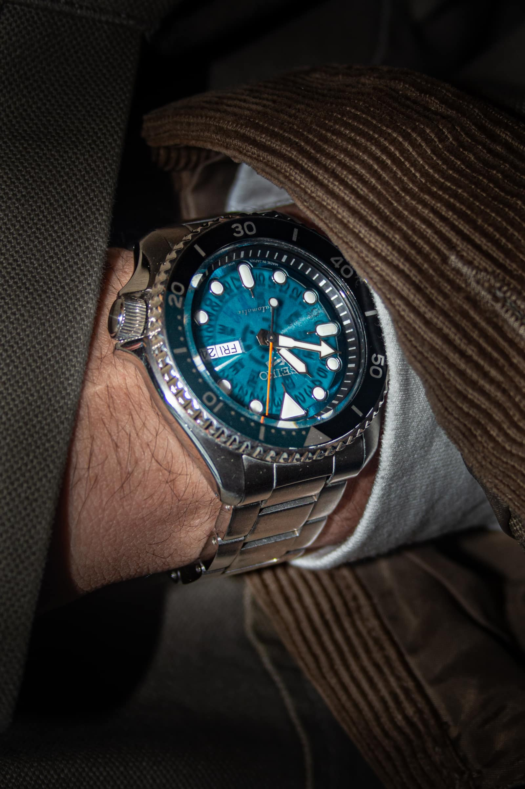
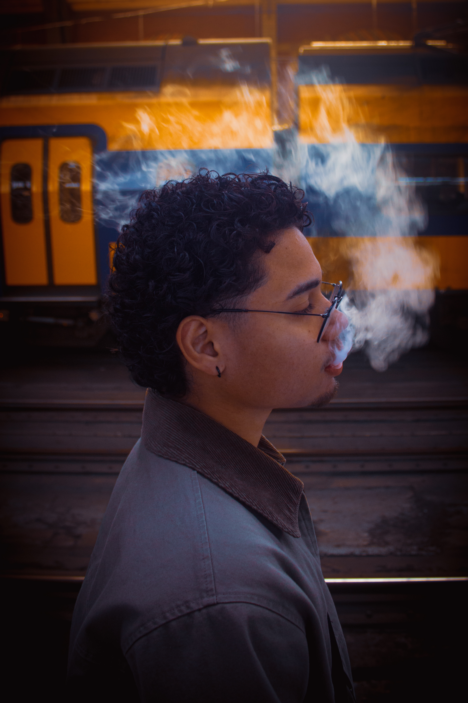

[SYS.VER: 10.4.2]
[LAT: 51.2194 N]
[LNG: 4.4025 E]
DAMIAN
MATTHEEUW
FRONT-END ARCHITECT // CINEMATIC VISION
SCROLL TO DECRYPT
SELECTED WORK
[01/04]


SHORTLY ABOUT MYSELF
[02/04]Damian Mattheeuw, operating at the intersection of logical systems and visual narrative. As a front-end architect, I build structural frameworks; as a photographer, I capture the world within them.
// STRUCTURAL INTEGRITY FIRST
// CINEMATIC AESTHETICS
// PERFORMANCE ORIENTED
SKILLS
[03/04]
[CORE]
REACT / NEXT.JS
[GSAP]
[THREE.JS / WEBGL]
[TYPESCRIPT]
[TAILWIND CSS]
[FIGMA]
[VISUAL]
PHOTOGRAPHY
[LIGHTROOM / CAPTURE ONE]
ENFOQUE [OFF-WORK]
[04/04]












